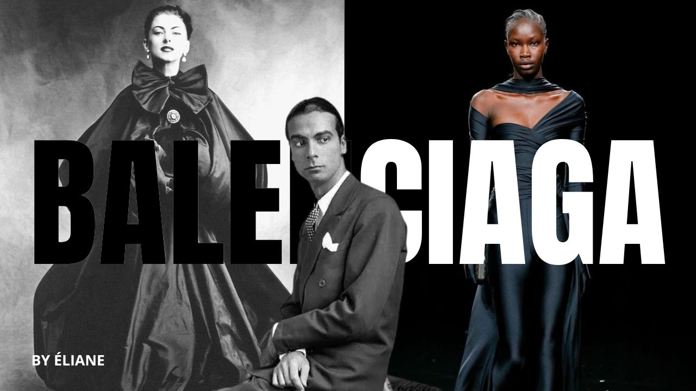
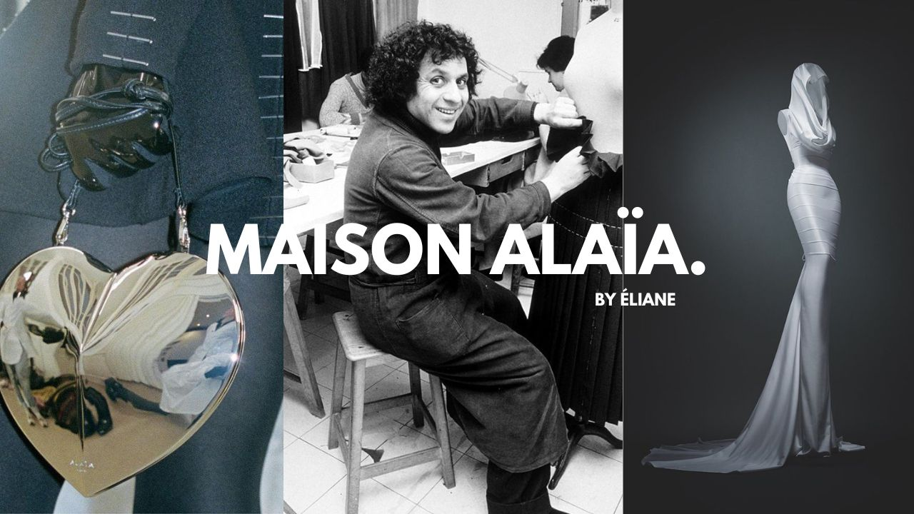
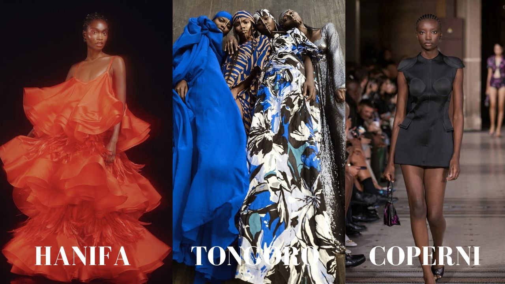
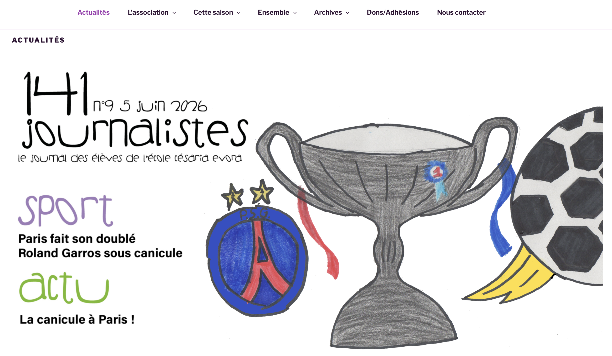
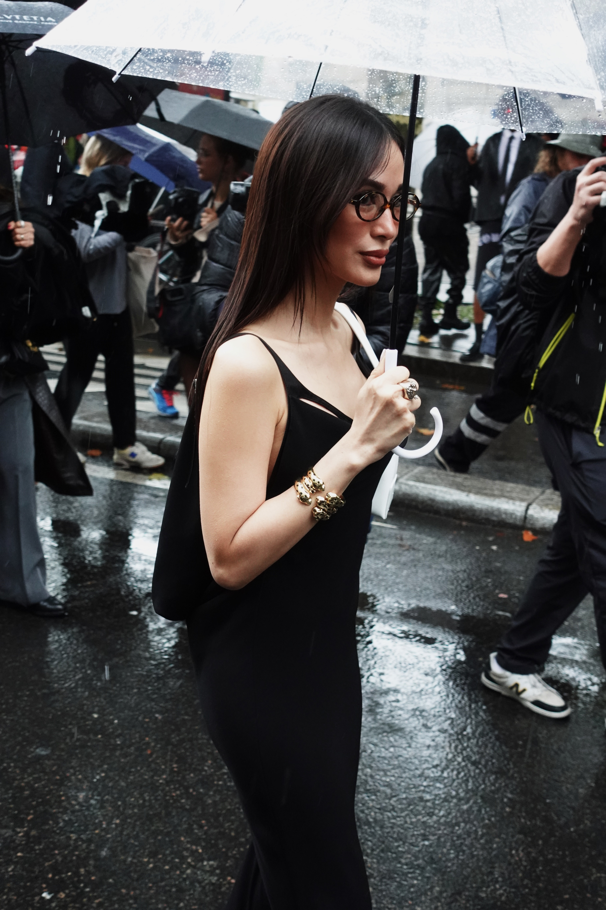
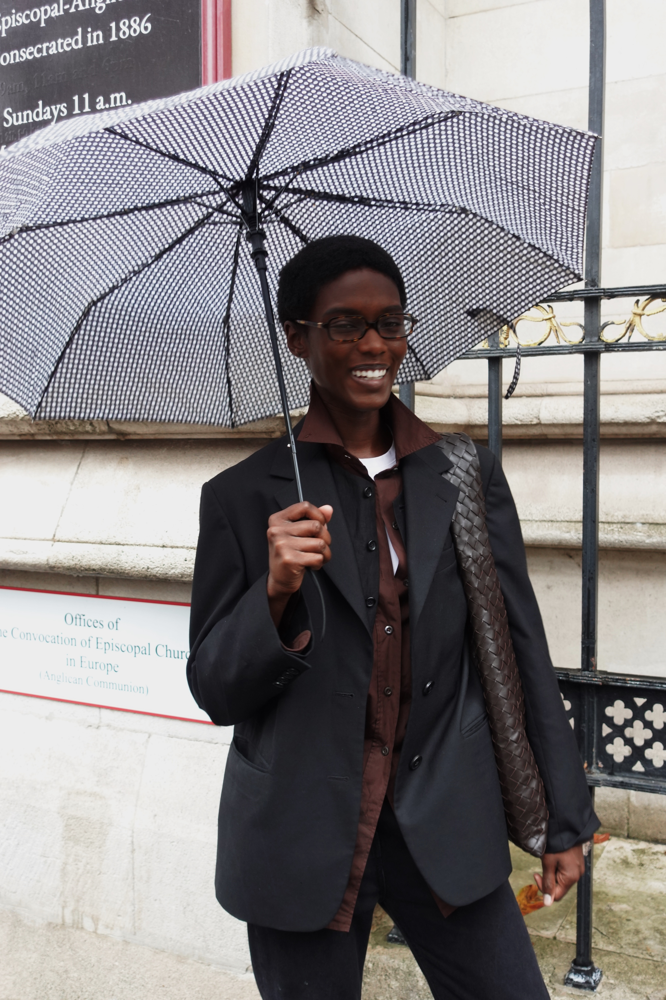
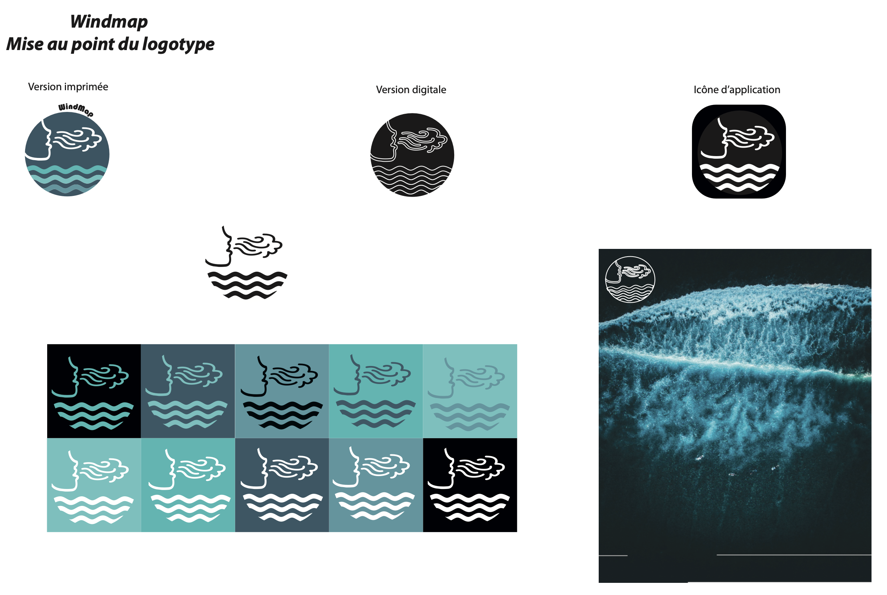

(1).png)
Je suis titulaire d'une licence en Information et Communication avec mention et je souhaite devenir journaliste web. Actuellement, je suis étudiante en Master 2 Cultures et Métiers du Web. Durant mon parcours universitaire j'ai fait du photojournalisme et de la radio. Depuis 2020, je fais des vidéos sur YouTube où je parle principalement de mode, lifestyle et je parle également de sujets d’actualité. En février 2024, j’ai créé mon magazine digital qui se nomme THE CLMB MAGAZINE.
2019
PHOTOJOURNALISME - Du Zaïre à la France, 27 ans d'histoire
Du Zaïre à la France, 27 ans d’histoire. Ce projet raconte l’histoire de ma grand-mère, je parle de son parcours de vie en France.
Outil utilisé : PowerPoint
2019
 Réalisation d'une affiche promotionnelle pour un projet.
Réalisation d'une affiche promotionnelle pour un projet.
Outil utilisé : Photoshop
2021
Réalisation d'une chronique de radio sur un sujet de société.
Outil utilisé : Audacity
2021
▶ VOIR LA PLAYLIST YOUTUBE



Le concept "Histoire de la mode" regroupe une série de vidéos retraçant le parcours de grandes maisons de luxe mais également des marques basiques.
Outils utilisés : Canva, DaVinci Resolve, CapCut
2023
▶VOIR LA PLAYLIST


C'est un concept que j'ai lancé sur ma chaîne YouTube.
À travers mes productions, je donne des conseils sur le bien-être et je parle également de tendances vestimentaires.
Outils utilisés : Canva et Cap Cut, Video Leap, DaVinci
JEUNE PAGES, JOURNALISME SCOLAIRE À PARIS

2023
Durant 6 mois, j'ai travaillé au sein de cette association dans le cadre de mon service civique.
Nous avons écrit des articles sur l'actualité avec des élèves de primaires et des élèves de collèges.
Outils utilisés : InDesign, WordPress
2024
THE CLMB, VOTRE MAGAZINE DIGITAL FÉMININ PRÉFÉRÉ
THE CLMB est un média dédié aux jeunes filles et aux femmes, dont la mission est de les valoriser et de les encourager au quotidien à travers la mode, des témoignages inspirants et le lifestyle.
Outils utilisés : WordPress, Canva, YouTube, CapCut, DaVinci Resolve
2024
Grâce à mon magazine, j’ai commencé à prendre des photos qui ont un lien avec la mode.
Outils utilisés : VSCO, Paramètres de l'iPhone, Lightroom




2024
Réalisation d’un logotype en lien avec la météo.
Outil utilisé : Illustrator


2025
Réalisation d’un projet web et d’une vidéo en lien avec l’année 1968.

Outil utilisé : WordPress, DaVinci Resolve